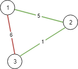
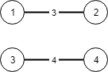

| Category | Difficulty | Likes | Dislikes |
|---|---|---|---|
| Algorithms | Medium | 1170 | 60 |
union-find | graph | heap-priority-queue | minimum-spanning-tree
amazon
There are n cities labeled from 1 to n. You are given the integer n and an array connections where connections[i] = [xi, yi, costi] indicates that the cost of connecting city xi and city yi (bidirectional connection) is costi.
Return the minimum cost to connect all the n cities such that there is at least one path between each pair of cities. If it is impossible to connect all the n cities, return -1,
The cost is the sum of the connections' costs used.
Example 1:

Input: n = 3, connections = [[1,2,5],[1,3,6],[2,3,1]]
Output: 6
Explanation: Choosing any 2 edges will connect all cities so we choose the minimum 2.Example 2:

Input: n = 4, connections = [[1,2,3],[3,4,4]]
Output: -1
Explanation: There is no way to connect all cities even if all edges are used.
Constraints:
1 <= n <= 1041 <= connections.length <= 104connections[i].length == 31 <= xi, yi <= nxi != yi0 <= costi <= 105